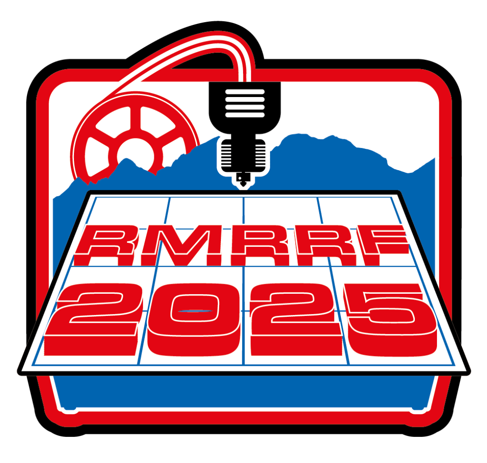
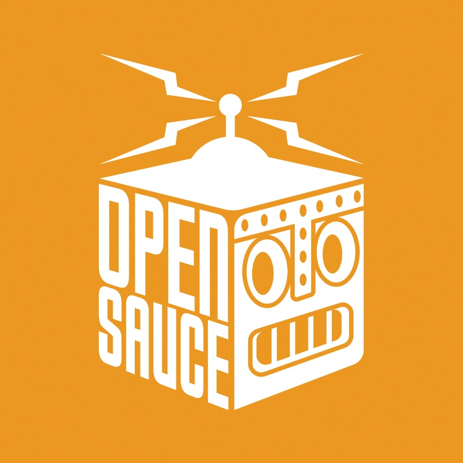

Join the community of makers and enthusiasts! Share your projects, ask questions, and connect with others who love 3D printing. Below are a few annual events where the 3D Printing community thrives!
Rocky Mountain RepRap Festival
In Loveland Colorado, the Rocky Mountain RepRap Festival (RMRRF) is a hub of creativity where makers gather to showcase prototype 3D printers, filament, and 3D printing accessories. In this 2-day event, vendors and makers come together to share their latest innovations and projects from all around the globe are shown off. The event is a great opportunity to learn about the latest advancements in 3D printing technology and to connect with other makers and enthusiasts.
Open Sauce
Hosted in California, William Osman's Open Sauce is a unique event that brings together makers, engineers, and enthusiasts to share their latest projects and ideas. The event features a variety of activities, including workshops, presentations, and hands-on demonstrations, allowing attendees to learn from each other and gain new skills. Open Sauce is a great opportunity to connect with other makers and inventors, and to share your own projects and ideas with a supportive community.